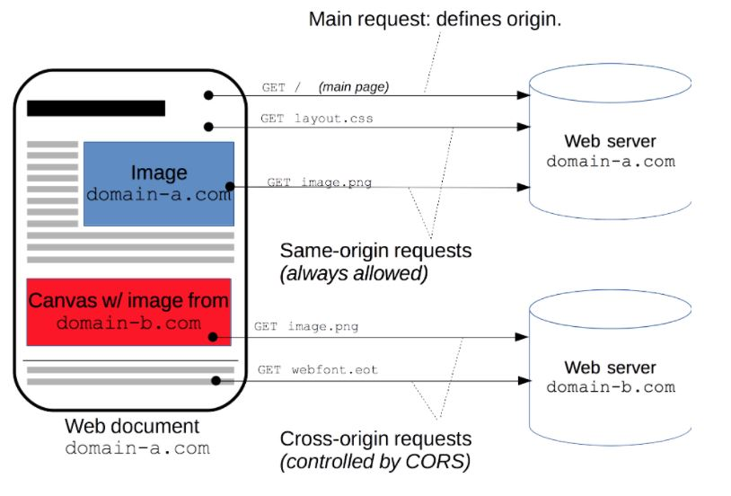
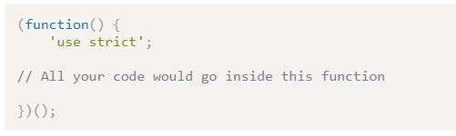
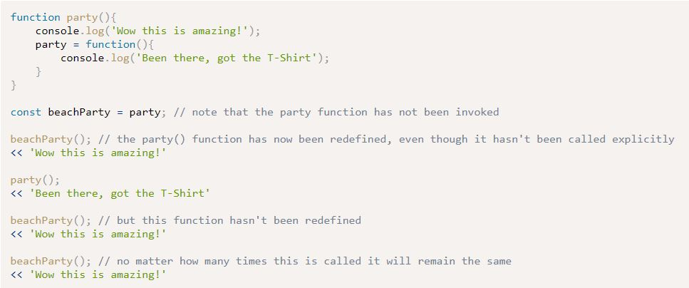

For securoty reasons, borwsers restrict cross-origin HTTP requests initiated form scripts. For example, XMLHttpRequest and the Fetch API follow the same-origin policy. This means that a web application using those APIs can only request resources from the same origin the application was loaded from unless the response from other origins includes the right CORS headers

Simple Requests don't trigger a CORS preflight
Preflighted requests are when the browser first sends an HTTP request using the OPTIONS method to the resource on the other origin, inorder to determine if the actual request is safe to send
Chapter 11 - Further Functions
Memoization
The idea is to cache the value of a time consuming calculation to allow a list of options that can be used instead of constantly reduing the same calculations.
Safe use of strict
One of the problems with simply placing 'use strict' at the beginning of a file is that it will enforce strict mode on all the JavaScript in the file, and if you're using other people's code, there's no guarantee that they've coded in strict mode.
Instead, use the strict mode inside and IIFE which ensures that only your code inside the IIFE is forced to use strict mode

Functions that Define and Rewrite Themselves

Recognize that if you set a property for the first naming of the function that this property will be lost if the function redefines itself in the same variable.
Promises
A promise represents the future result of an asynchronous operation. Promises don't do anything that can't already be achieved using callbacks, but they help simplify the process, and avoid the convoluted code that can result from using multiple callbacks
Promise Life Cycle
Resolved - the asynchronous operation was completed successfuly
Rejected - the asynchronous operation didn't wok as expected, wasn't successfully completed or resulted in an error.
AJAX
Ajax is a technique that allows web pages to communicate assynchonously with a server, and it dynamically updates web pages without reloading. This enables data to be sent and received in the background, as well as portions of a page to be updated in response to user events, while the rest of the program continues to run.
An Application programming interface (API) is a collection of methods that allows external access to another program or service. Many websites allow controlled access to their data via public APIs. This means that developers are able to interact with the data and create mashups of third-party services. The information that's returned by APIs is often serialized as JSON. Since the data is being provided by an external site, CORS will have to be enabled in order to access information from an API. Some services may also require authentication to access their APIs.
FETCH API
The global fetch() method only has one mandatory argument, which is the URRL of hte resource you wish to fetch.